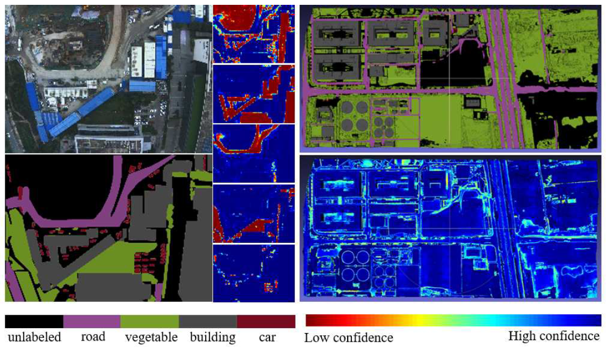
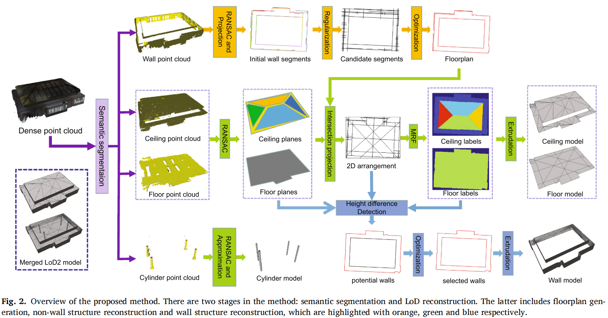

Hanqing Jiang | 姜翰青
I am a Research Director in SenseTime Group Inc., in charge of 3D Reconstruction Team, 3D Vision & Augmented Reality Dept. of SenseTime Research. I am also a member of 3D Vision Committee of CSIG, the secretary general of ZJAI-AR Committee of ZFAI, and an expert of ISO/IEC JTC1.
I obtained my Ph. D degree from Zhejiang University, after which I was a postdoctoral researcher in the State Key Lab of CAD&CG, Zhejiang University, under the supervision of Prof. Hujun Bao and Prof. Guofeng Zhang. My research interests focus on computer vision, including video enhancement, multi-view stereo, 3D reconstruction, and augmented reality. I was the third prize winner of Lu Zengyong's CAD&CG High-tech Awards 2012, and won the best paper award of Chinagraph 2012 and the best paper award of ISMAR 2020.
Experience
- Research Director in 3D Reconstruction Team, 3D Vision & Augmented Reality Dept. of SenseTime Research, SenseTime Group Inc.
- Senior Research Engineer in Media Engineering Dept. of Central Hardware Engineering Inst., Huawei Tech. 2012 Lab.
- R&D Director / Co-founder of Taovision Film Tech. Co. Ltd., Hangzhou.
- Postdoctoral at State Key Lab of CAD&CG, Zhejiang University, supervised by Prof. Guofeng Zhang and Prof. Hujun Bao.
- Research Engineer at Visual Information Processing Lab, National University of Singapore, supervised by Prof. Ping Tan.
- Ph. D in Computer Science & Tech. at State Key Lab of CAD&CG, Zhejiang University, supervised by Prof. Hujun Bao.
Publication
* denotes equal contribution and joint first authorship
+ denotes corresponding author
Hybrid-MVS: Robust Multi-View Reconstruction with Hybrid Optimization of Visual and Depth Cues. IEEE Transactions on Circuits and Systems for Video Technology (TCSVT), 33(12): 7630-7644, 2023
Chenchen Li
*, Liyang Zhou
*,
Hanqing Jiang*, Zhuang Zhang, Xiaojun Xiang, Han Sun, Qing Luan, Hujun Bao, and Guofeng Zhang
+
Paper
Citation
DP-MVS: Detail Preserving Multi-View Surface Reconstruction of Large-Scale Scenes. Remote Sensing, 13(22): 4569, 2021
Liyang Zhou
*, Zhuang Zhang
*,
Hanqing Jiang*, Han Sun, Hujun Bao, and Guofeng Zhang
+
Paper
Project Page
Citation
Mobile3DScanner: An Online 3D Scanner for High-quality Object Reconstruction with a Mobile Device. IEEE Transactions on Visualization and Computer Graphics (TVCG), 27(11): 4245-4255, 2021
Xiaojun Xiang
*,
Hanqing Jiang*, Guofeng Zhang
*, Yihao Yu, Chenchen Li, Xingbin Yang, Danpeng Chen, and Hujun Bao
+
ISMAR 2021 Best Journal Paper Nominee
Paper
Project Page
Citation

Active Learning Based 3D Semantic Labeling From Images and Videos. IEEE Transactions on Circuits and Systems for Video Technology (TCSVT), 32(12): 8101-8115, 2021
Mengqi Rong, Hainan Cui, Zhanyi Hu,
Hanqing Jiang, Hongmin Liu, and Shuhan Shen
+
Paper
Citation

Vectorized Indoor Surface Reconstruction from 3D Point Cloud with Multistep 2D Optimization. ISPRS Journal of Photogrammetry and Remote Sensing, 177: 57-74, 2021
Jiali Han, Mengqi Rong,
Hanqing Jiang, Hongmin Liu, and Shuhan Shen
+
Winner of CVPR 2021 International Scan-to-BIM Challenge
Paper
Citation
Code
Mobile3DRecon: Real-time Monocular 3D Reconstruction on a Mobile Phone. IEEE Transactions on Visualization and Computer Graphics (TVCG), 26(12): 3446-3556, 2020
Xingbin Yang
*, Liyang Zhou
*,
Hanqing Jiang*, Zhongliang Tang, Yuanbo Wang, Hujun Bao, and Guofeng Zhang
+
ISMAR 2020 Best Paper Award
Paper
Project Page
Citation
Spatio-Temporal Video Segmentation of Static Scenes and Its Applications. IEEE Transactions on Multimedia, 17(1):3-15, 2015
Hanqing Jiang, Guofeng Zhang
+, Huiyan Wang, and Hujun Bao
Paper
Video
Supplementary Doc
Citation
3D Reconstruction of Dynamic Scenes with Multiple Handheld Cameras. European Conference on Computer Vision (ECCV), 2012: 601-615
Hanqing Jiang, Haomin Liu, Ping Tan, Guofeng Zhang
+, and Hujun Bao
Paper
Video
Supplementary Doc
Citation
Motion Imitation with a Handheld Camera. IEEE Transactions on Visualization and Computer Graphics (TVCG), 17(10): 1475-1486, 2011
Guofeng Zhang,
Hanqing Jiang, Jin Huang, Jiaya Jia, Tien-Tsin Wong, Kun Zhou, and Hujun Bao
Paper
Video
Citation
An Experimental Facial Synthesis System Using Graph Cut and Gradient Domain Fusion. International Conference on Technologies for E-Learning and Digital Entertainment, 2006: 1047-1052
Xiaohong Jiang, Fen Dai, and
Hanqing Jiang
Paper
Citation